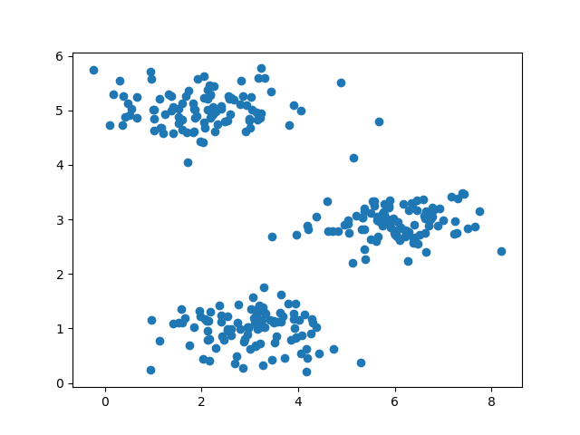
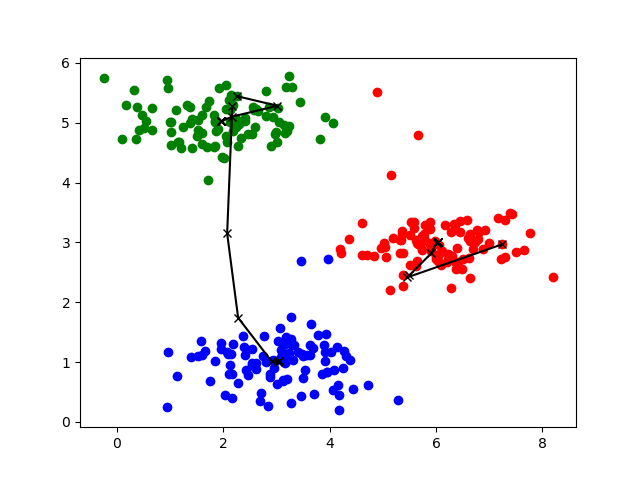
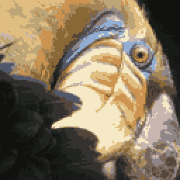
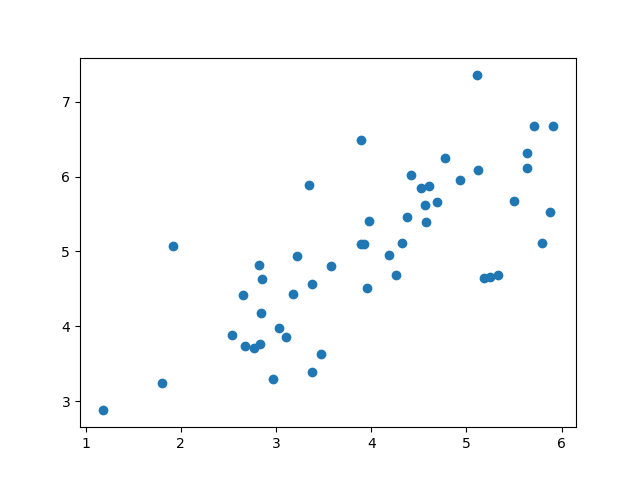
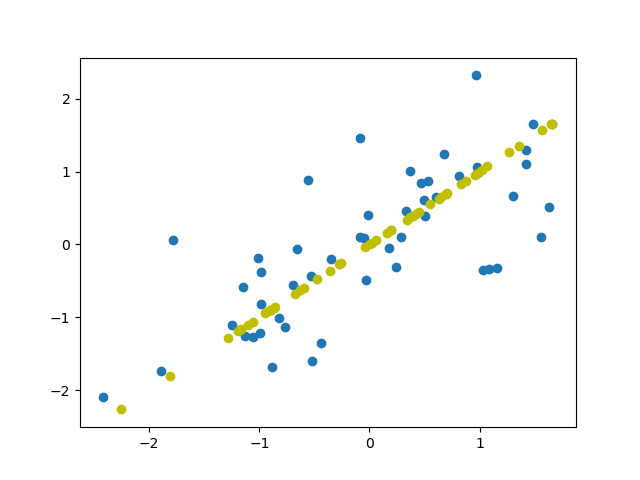
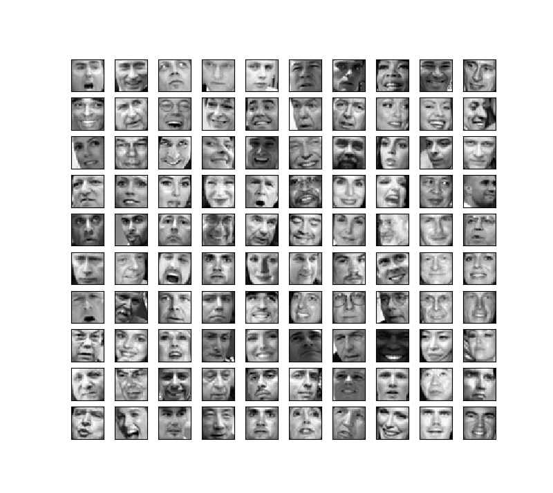
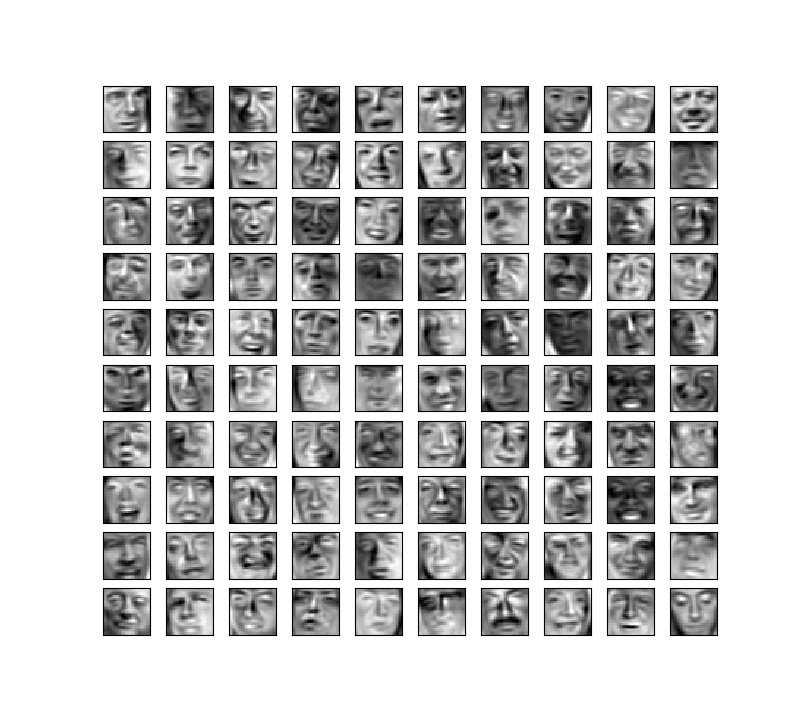

K-means Clustering
K-均值最小化问题，是要最小化所有的数据点与其所关联的聚类中心点之间的距离之和，因此
K-均值的代价函数（又称畸变函数 Distortion function）为：
$J(c^{(1)},…,c^{(m)},μ_1,…,μ_K)=\dfrac{1}{m}\sum^{m}_{i=1}\left| X^{\left( i\right)}-\mu_{c^{(i)}}\right| ^{2}$
其中$\mu_{c^{(i)}}$代表与$x^{(i)}$最近的聚类中心点。
我们的的优化目标便是找出使得代价函数最小的 $c^{(1)}$,$c^{(2)}$,…,$c^{(m)}$和$μ^1$,$μ^2$,…,$μ^k$
导入如下包：1
2
3
4import numpy as np
import matplotlib.pyplot as plt
from PIL import Image
from scipy.io import loadmat
Implementing K-means
因此K-means算法主要分为两个步骤：
(1)将样本点分配给离其最近的聚类中心（cluster centroids）点，聚成K个类。
(2)重新计算每一组的平均值，聚类中心点移动到平均值的位置。
Finding closest centroids
对于每一个样本$i$我们设为：
$c^{(i)}:=j\:that minimizes ||x^{(i)}-\mu_j||^2,$
其中$c^{(i)}$是距离$x^{(i)}$最近的聚类中心的索引，$\mu_j$是第j个聚类中心点的位置。
1 | def findClosestCentroids(X, centroids): |
Computing centroid means
对于每一个聚类中心$k$我们设为：
$\mu_k:=\frac{1}{|C_k|}\displaystyle\sum_{i{\in}C_k}x^{(i)}$
其中$C_k$是聚类中心点k的样本数量。1
2
3
4
5def computeCentroids(X, idx, K):
centroids = []
for i in range(K):
centroids.append(np.mean(X[np.where(idx == i)],axis =0))
return np.array(centroids)
Kmeans
将上述两个步骤相结合，形成K-means算法：1
2
3
4
5
6
7
8
9def runKmeans(X, centroids, max_iters, K):
idx = []
#total_centroids = centroids.copy()
for i in range(max_iters):
idx = findClosestCentroids(X, centroids)
centroids = computeCentroids(X, idx, K)
#total_centroids = np.r_[total_centroids, centroids]
#line_plot(total_centroids, X, idx, K)
return centroids, idx
Random initialization
对于初始的聚类中心位置，我们需要进行随机初始化，随机为样本中某些点的位置（不重复）1
2
3
4def kMeansInitCentroids(X, K):
index = np.random.choice(len(X), K)
initial_centroids = X[index]
return initial_centroids
K-means on example dataset
读取数据点：1
data2 = loadmat('ex7data2.mat') # X (300, 2)
散点图：1
2
3
4
5def scatter_plot(X):
plt.scatter(X[:,0], X[:,1], marker='o')
scatter_plot(data2['X'])
plt.show()

K-means聚类：
折线图（runKmeans函数中取消注释）：1
2
3
4
5
6
7
8
9
10
11def line_plot(total_centroids, X, idx, K):
colors = ['red', 'blue', 'green']
for i in range(K):
plt.scatter(X[np.where(idx == i)][:,0],
X[np.where(idx == i)][:,1], c=colors[i], marker='o')
plt.plot(total_centroids[::3,0::3],
total_centroids[::3,1::3], c='k', marker='x')
plt.plot(total_centroids[1::3,0::3],
total_centroids[1::3,1::3], c='k', marker='x')
plt.plot(total_centroids[2::3,0::3],
total_centroids[2::3,1::3], c='k', marker='x')
注：3表示间隔。1
2
3
4
5
6
7K = 3
max_iters = 10
initial_centroids = kMeansInitCentroids(data2['X'], K)
kMeansInitCentroids(data2['X'], K)
centroids, idx = runKmeans(data2['X'], initial_centroids,
max_iters, K)
plt.show()
结果如下：

Image compression with K-means
此次对图片进行压缩，并不是通过降维，而是通过K-means方法将邻近的颜色进行聚类，从而达到压缩图片的目的。
图片为128128的RGB色彩图片，保存大小为：12812838=393216 bits。本次使用K-Means方法进行压缩，图片大小为：1624+128128*4=65920bits（解释：因为RGB存储的数值为浮点型，故为8位。而压缩后的图片只需要16种颜色的RGB值，而图片中每个像素的RGB可以用聚类中心组的索引表示，即可用整型，即4位）。1
2
3
4
5
6
7
8
9
10
11
12
13
14K = 16
im = Image.open('bird_small.png')
A = np.array(im) # (128,128,3)
A = A / 255
A = A.reshape((A.shape[0]*A.shape[1],3))
initial_centroids = kMeansInitCentroids(A, K)
centroids, idx = runKmeans(A, initial_centroids,
max_iters, K)
for i in range(len(idx)):
A[i] = centroids[idx[i]]
A = A.reshape((128, 128, 3))
A = np.uint8((A * 255))
A = Image.fromarray(A)
A.show()
原图与压缩后的图片对比：

Principal Component Analysis
主成分分析法是最常见的降维算法。它主要是将$n$维数据降至$k$维，目标是找到向量$u^{(1)}$,$u^{(2)}$,…,$u^{(k)}$使得总的投射误差最小。
Implementing PCA
Normalize the Data
在使用PCA之前，我们第一步必须要将数据均值归一化（之前已经提到过）。1
2
3
4def featureNormalize(X):
mean = np.mean(X, axis = 0)
std = np.std(X, axis = 0)
return (X - mean) / std
Covariance Matrix
第二步我们需要计算出协方差矩阵：
$\sum=\dfrac {1}{m}\sum^{n}_{i=1}\left( x^{(i)}\right) \left( x^{(i)}\right) ^{T}$1
2m = len(X)
sigma = np.dot(X.T, X) / m
Eigenvectors
第三步我们需要计算出协方差矩阵的特征向量。我们可以利用奇异值分解（singular value decomposition）来求解，U,S,V = numpy.linalg.svd(sigma)。其中U为协方差矩阵的特征向量。1
2
3
4
5def pca(X):
m = len(X)
sigma = np.dot(X.T, X) / m
U, S, V = np.linalg.svd(sigma)
return U, S
Projecting the data onto the principal components
第四步，对于一个 $n×n$维度的矩阵，上式中的$U$是一个具有与数据之间最小投射误差的方向向量构成的矩阵。如果我们希望将数据从$n$维降至$k$维，我们只需要从$U$中选取前$k$个向量，获得一个$n×k$维度的矩阵，我们用$U_{reduce}$表示，然后通过如下计算获得要求的新特征向量$z^{(i)}$:
1 | def projectData(X, U, K): |
Reconstructing an approximation of the data
对数据进行恢复：
$x_{appox}=U_{reduce}\cdot z$,$x_{appox}\approx x$1
2def recoverData(Z, U, K):
return np.dot(Z, U[:,:K].T)
Dimensionality Reduction with PCA
读取数据，并通过散点图显示：1
2
3
4
5
6
7def scatter_plot(X):
plt.scatter(X[:,0], X[:,1], marker='o')
data1 = loadmat('ex7data1.mat')
X1 = data1['X'] #(50, 2)
scatter_plot(X1)
plt.show()

我们按如上步骤使用PCA进行降维：1
2
3
4
5
6K = 1
X1_norm = featureNormalize(X1)
U, S = pca(X1_norm) #(2, 2), (2, )
Z = projectData(X1_norm, U, K)
print(Z)
降维后的数据为：1
2
3
4
5[[ 1.49631261]
[-0.92218067]
...
[ 0.36792871]
[-1.44264131]]
再将其复原，与原数据的差距用散点图进行比较（当然原数据的散点图是已经经过归一化的数据）：1
2
3X_appox = recoverData(Z, U, K)
plt.scatter(X_appox[:,0],X_appox[:,1], c= 'y')
plt.show()

Face Image Dataset
此次实验，我们通过人脸图片来观测降维。每张图片大小为32*32的灰度图片。1
2
3
4
5
6
7
8
9
10
11
12
13
14def plot_100_image(X):
size = int(np.sqrt(X.shape[1]))
sample_idx = np.random.choice(np.arange(X.shape[0]), 100)
sample_images = X[sample_idx, :]
fig, ax_array = plt.subplots(nrows=10, ncols=10, sharey=True, sharex=True, figsize=(8, 8))
for r in range(10):
for c in range(10):
ax_array[r, c].imshow((sample_images[10 * r + c].reshape((size, size))).T,
cmap=plt.cm.gray)
# 去坐标
plt.xticks(np.array([]))
plt.yticks(np.array([]))
如图所示：

PCA on Faces
1 | data_faces = loadmat('ex7faces.mat') |
复原的图像：

注：复原后的为归一化后的数据，显示的图片也是。